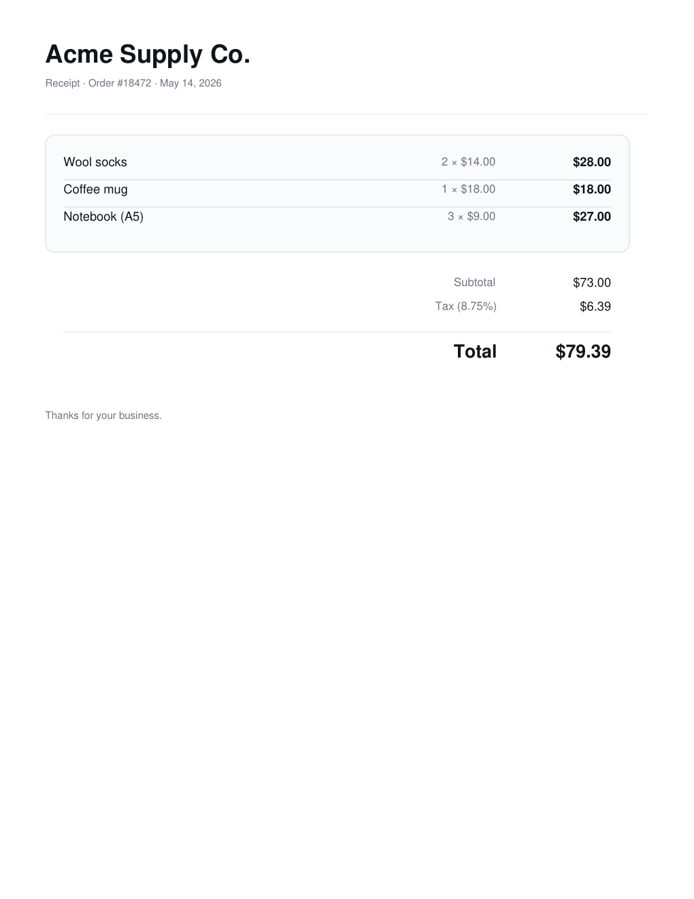
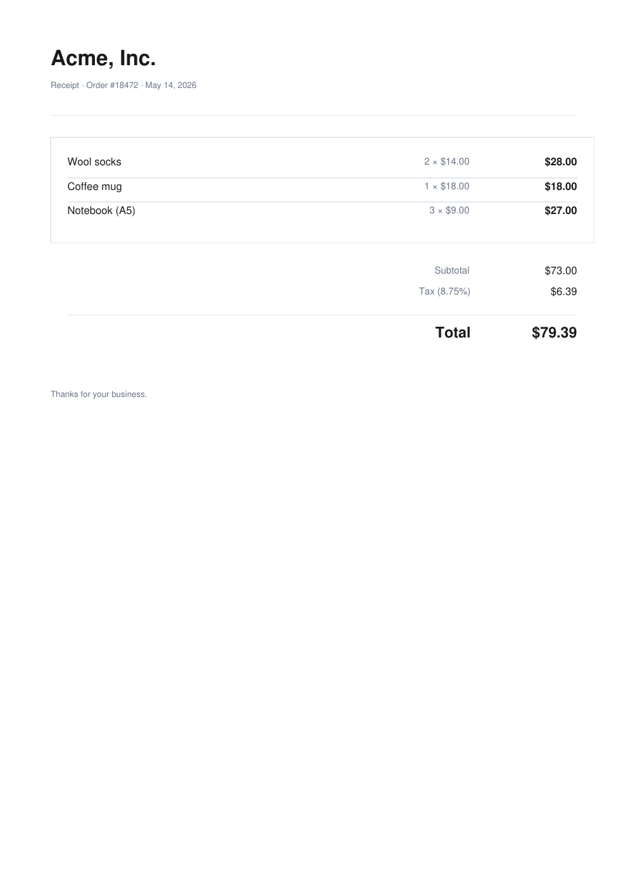
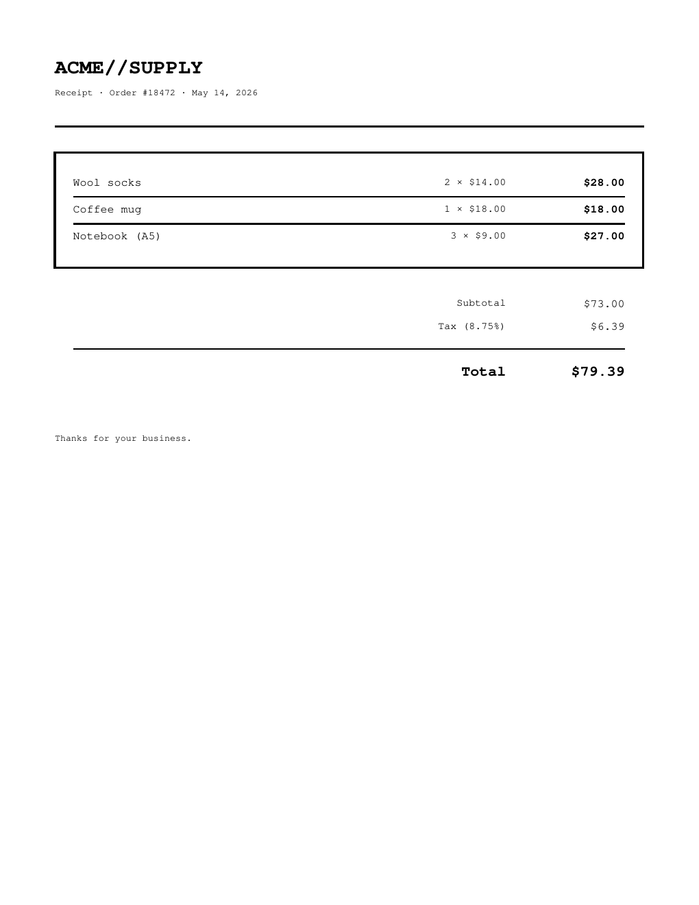
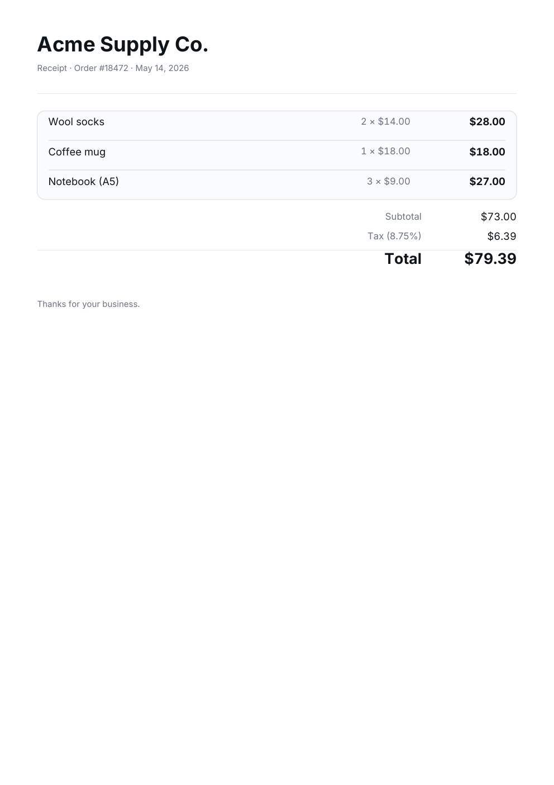
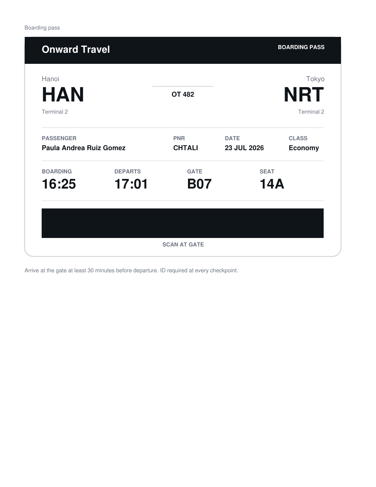
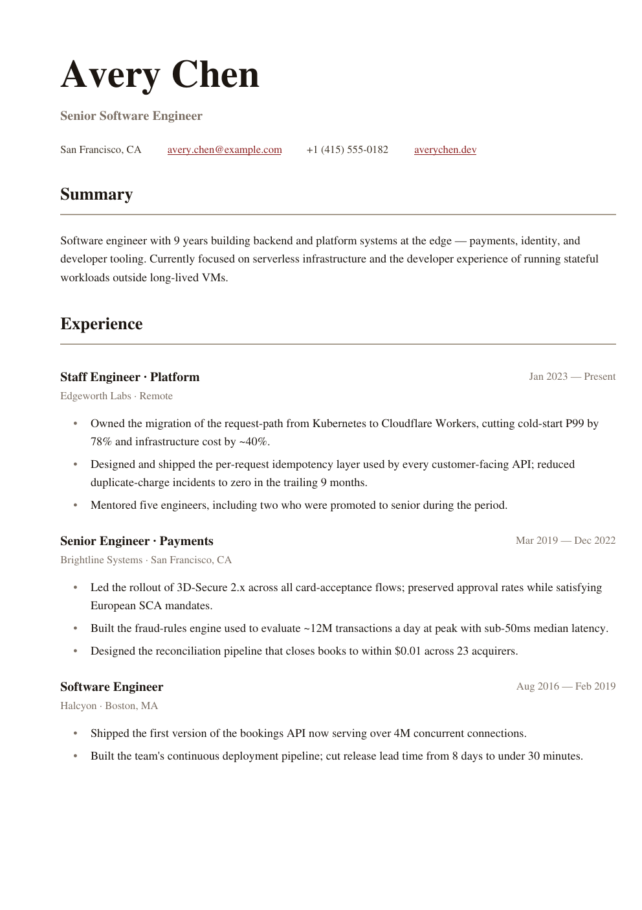
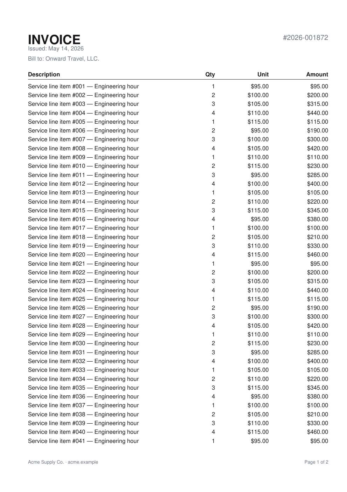
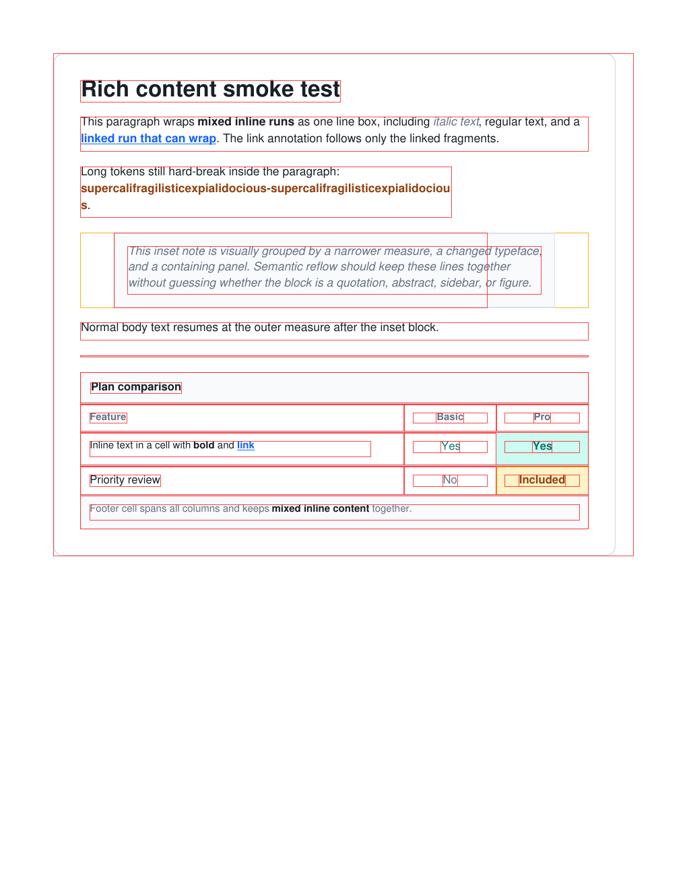
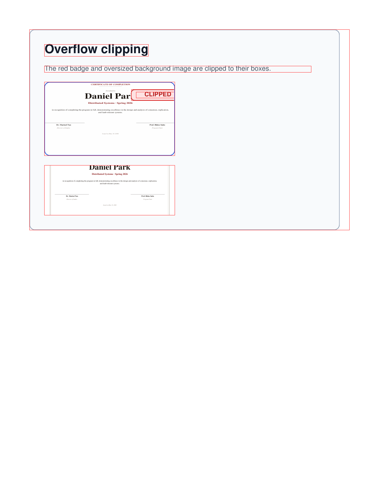
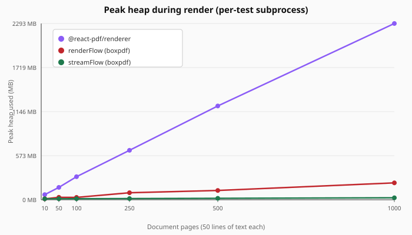

Declarative PDFs
that run anywhere.
A tiny box-layout DSL over pdf-lib. Flexbox-lite for server-side PDF generation in Node, Cloudflare Workers, Deno, and the browser. No WASM. No headless browser. No React.
import { cleanTheme, hline, hstack, renderFlow, text, vstack } from "boxpdf";
import { PDFDocument, StandardFonts } from "pdf-lib";
const pdf = await PDFDocument.create();
const font = await pdf.embedFont(StandardFonts.Helvetica);
const bold = await pdf.embedFont(StandardFonts.HelveticaBold);
const theme = cleanTheme(font, bold);
await renderFlow(pdf, [
vstack({ gap: 8 },
text("Receipt #18472", theme.type.h1),
text("May 14, 2026", theme.type.caption)
),
hline(theme.hr),
hstack({ gap: 16 },
text("Wool socks", theme.type.body),
text("$28.00", { ...theme.type.body, font: bold, align: "right", width: 80 })
)
]);
const bytes = await pdf.save(); // -> Uint8ArrayWhat's in the box
Runs at the edge
Works on Cloudflare Workers without nodejs_compat or any WASM flag. Verified end-to-end with embedded Inter.
Flex-ish layout, no coordinates
vstack / hstack with padding, margin, gap, justify, align, grow, shrink. Real word-wrapping and ellipsis.
Streaming output
streamFlow emits bytes to a WritableStream as each page closes. Peak heap stays flat at any page count. A 1000-page report uses 5× less memory than renderFlow + pdf.save().
Four named themes
Drop-in cleanTheme, stripeTheme, editorialTheme, brutalistTheme. Same code restyles every template.
Multi-page flow
renderFlow paginates with atomic children. keepTogether bundles widows. Page headers and footers with { pageNumber, totalPages } built in.
Bring your own fonts
Optional boxpdf/inter ships subsetted Inter (82 KB / weight). loadFont(pdf, source) and the boxpdf font add CLI bundle any TTF as base64.
Hyperlinks, decorations, metadata
link({ href }, ...), underline, strikethrough, title / author / subject as renderFlow options.
Debug overlay
renderFlow(pdf, nodes, { debug: true }) outlines every content and margin box in red and orange. Trace layouts visually.
Tiny, tree-shakable
Core is <7 KB minified. boxpdf/inter and @pdf-lib/fontkit only load when you use them.
Tailwind HTML
boxpdf-html can render document-style HTML from generated Tailwind CSS. Run Tailwind first, embed the CSS, then translate the HTML to boxpdf primitives.
<div class="p-8 bg-white">
<h1 class="text-2xl font-bold text-gray-900">
Invoice #1234
</h1>
<div class="mt-4 flex justify-between">
<span class="text-gray-600">Total</span>
<span class="text-xl font-semibold">$1,250.00</span>
</div>
</div>
Four named themes
Same layout code, four aesthetics. Swap the theme and every template restyles.




Template gallery
Production-ready documents in templates/. Copy a file, edit it for your data, ship it.











Install
npm install boxpdf pdf-lib
pdf-lib is a peer dependency. If you want custom-font embedding (incl. boxpdf/inter), @pdf-lib/fontkit comes along for the ride and is lazy-loaded only when you embed a non-standard font.
Cloudflare Workers
Both the core and the boxpdf/inter subpath are verified to run on Cloudflare Workers without nodejs_compat or any WASM flag. Drop it into a worker handler:
import { Hono } from "hono";
import { PDFDocument, StandardFonts } from "pdf-lib";
import { cleanTheme, renderFlow, text, vstack } from "boxpdf";
const app = new Hono();
app.get("/receipt.pdf", async (c) => {
const pdf = await PDFDocument.create();
const font = await pdf.embedFont(StandardFonts.Helvetica);
const bold = await pdf.embedFont(StandardFonts.HelveticaBold);
const t = cleanTheme(font, bold);
await renderFlow(pdf, [
text("Thanks!", t.type.h1),
text("This PDF was generated at the edge.", t.type.body)
]);
const bytes = await pdf.save();
return new Response(bytes, { headers: { "content-type": "application/pdf" } });
});
export default app;How it compares
| boxpdf | pdf-lib | @react-pdf/renderer | jsPDF | |
|---|---|---|---|---|
| Declarative layout | ✓ | ✗ | ✓ (JSX) | ✗ |
| Cloudflare Workers | ✓ | ✓ | ✗ (fontkit WASM) | partial |
| Streaming output | ✓ streamFlow (Web Writable, bounded memory) | ✗ | Node only | ✗ |
| Custom fonts | ✓ via fontkit (lazy) | ✓ via fontkit | ✓ | limited |
| Core bundle | ~7 KB gz | ~250 KB gz | ~250 KB gz | ~80 KB gz |
| JSX runtime conflict | none | n/a | requires React | n/a |
Sizes are approximate. Measure yourself.
Memory bench
Peak heap during render. 50 lines of text per page. Each measurement runs in its own subprocess. @react-pdf/renderer uses Standard Helvetica (no font embedding) to match the boxpdf paths.

| Pages | streamFlow | renderFlow | @react-pdf/renderer | Output |
|---|---|---|---|---|
| 50 | 12.8 MB | 31.7 MB | 160.8 MB | 70 KB |
| 250 | 15.4 MB | 91.1 MB | 643.1 MB | 347 KB |
| 500 | 18.7 MB | 120.8 MB | 1,219.9 MB | 693 KB |
| 1000 | 25.4 MB | 219.6 MB | 2,292.6 MB | 1.4 MB |
Bench source: scripts/bench-memory.ts. Design doc: docs/design/streaming.md.
Current surface
- ✓ Box layout DSL: vstack, hstack, text, image, hline, vline, spacer, flex, keepTogether
- ✓ Padding, margin, background, backgroundImage, borders, per-side borders, borderRadius, overflow clipping, flex-grow, justify, align
- ✓ Flex-shrink with whitespace-only wrapping (opt in to mid-word break or ellipsis)
- ✓ Word-wrap, no-wrap, hard breaks, ellipsis, multi-line text with maxLines
- ✓ Rich paragraphs with mixed runs, links, inline replaced nodes, hanging indents, and paragraph floats
- ✓ Themes: clean, stripe, editorial, brutalist
- ✓ Multi-page flow with header, footer, PageContext, stack fragmentation, and table row fragmentation
- ✓ Links (PDF annotations), text decorations, document metadata
- ✓
loadFont(URL, bytes, base64, data URL),embedInter,loadImagehelpers - ✓
boxpdf font addCLI bundles any TTF as base64 bytes forloadFont - ✓ Tabular numerals on Inter for money columns (
embedInter(pdf, { tabularFigures: true })) - ✓ First-class
table()primitive with styled cells, colSpan, valign, border collapse, and repeated headers - ✓
svgPath(),imageFit(),aspectRatio(), debug overlay, formatCurrency, defineStyles - ✓ CSS-like absolute positioning with paired-edge stretch and
zIndex - ✓ Optional renderFlow profiling hooks for diagnosing layout measurement costs
- ✓ Verified end-to-end on Cloudflare Workers (core and Inter path)
- ✓ Streaming page-at-a-time output via
streamFlow. Peak heap stays flat at any page count.